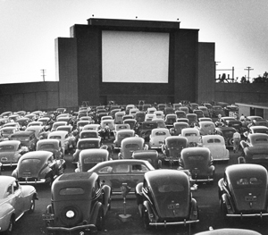
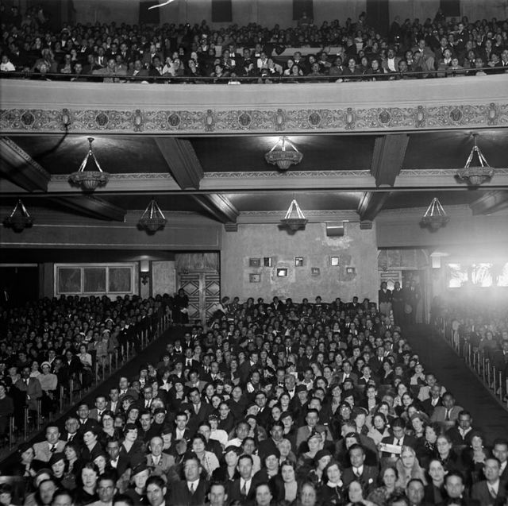
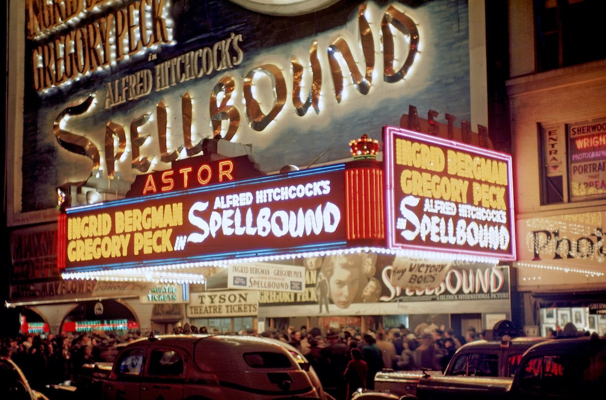

Welcome! My name is Emilie, and I recently set a personal goal to expand my class movie repertoire. On this site, you'll find a list of movies I've watched recently along with my thoughts and opinions on them. I've also included a list of movies I want to watch, but have not yet gotten to. Enjoy!